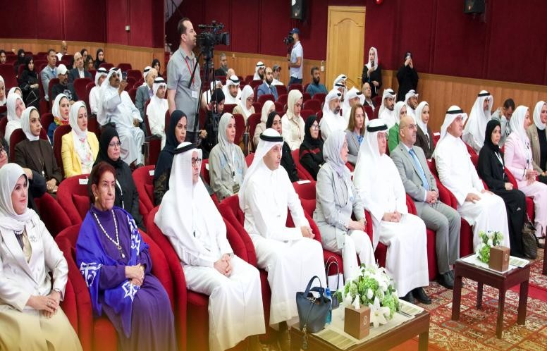

المكتبة التربوية الخليجية الرقمية
184 إصداراً تربوياً خليجياً، تستكشفها كقاعدة بيانات
ابحث وصفِّ حسب النوع والسنة والدولة والمحور، وصدِّر المراجع مباشرة. كل دراسة يصدرها المركز منذ 1994 في مكان واحد.
الدول الأعضاءاختر دولة لعرض ما يخصّها
الدولة المختارةمقر المركز
إصدارات في المكتبة
184
17 إصداراً في 2025، أعلى سنةدراسات وبحوث
127
أكبر فئة في المكتبةأعداد مجلة مستقبليات تربوية
44
مجلة محكّمةدول أعضاء
7
يخدمها المركز من الكويتمستكشف الإصدارات
صفِّ النتائج واقرأ الاتجاه عبر السنوات
الإصدارات حسب السنة1994 إلى 2026 · 179 إصداراً مفهرساً
أحدث النتائجالترتيب: الأحدث

رخص المعلمين في الدول الأعضاء بمكتب التربية العربي لدول الخليج: دراسة تقويمية
دراسة2026 · 420 صفحةيُطلب من المركز

من البيانات إلى القرار: كيف تعيد تحليلات التعلم تشكيل منظومة صناعة القرار التربوي؟
مجلة مستقبليات تربوية2026 · 130 صفحةمتاح للتحميل


محاور البحث
ما الذي درسه المركز أكثر من غيره

مشغل تربوي حول الإطار الاستراتيجي للتعليم العام في دول مجلس التعاون
